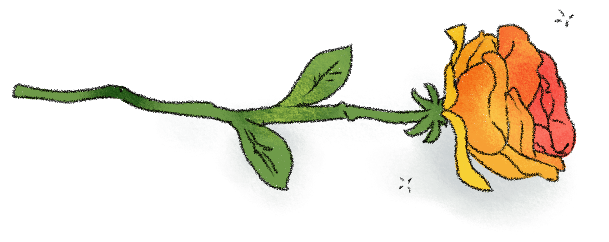

The proper place for the word, or group of words, which the writer desire to make most prominent is usually the end of the sentence.
* Humanity has hardly advanced in fortitude since that time, though it has advanced in many other ways.
Humanity, since that time, has advanced in many other ways, but it has hardly advanced in fortitude.
* The steel is principally used for making razors, because of its hardness.
Because of its hardness, this steel is principally used in making razors.
The word or group of words entitled to this position of prominence is usually the logical predicate, that is, the new element in the sentence, as it is in the second example.

The effectiveness of the periodic sentence arises from the prominence which it gives to the main statement.
Four centuries ago, Christopher Columbus, one of the Italian mariners whom the declind of their own republics had put at the service of the world and of adventure, seeking for a Spain a westward passage to the Indies as a set-off against the achievements of Portuguese discoverers, lighted on America.
With these hopes and in this belief I would urge you, laying aside all hindrance, thrusting away all private aims, to devote yourself unswervingly and unflinchingly to the vigorous and successful prosecution of this war.
the other prominent position in the sentence is the beginning. Any element in the sentence, other than the subject, becomes emphatic when placed first.
Deceit or treachery he could never forgive.
So vast and rude, fretted by the action of nearly three thousand year, the fragments of this architecture may often seem, at first sight, like works of nature.
A subject coming first in its sentence may be emphatic, but hardly by its position alone. In the sentence,
Great kings worshipped at his shrine,
the emphasis upon kings arises largely from its meaning and from the context. To receive special emphasis, the subject of a sentence must take the position of the predicate.
Through the middle of the valley flowed a winding stream.
The principle that the proper place for what is to be made most prominent is the end applies equally to the words of a sentence, to the sentences of a paragraph, and to the paragraphs of a composition.
<< >>